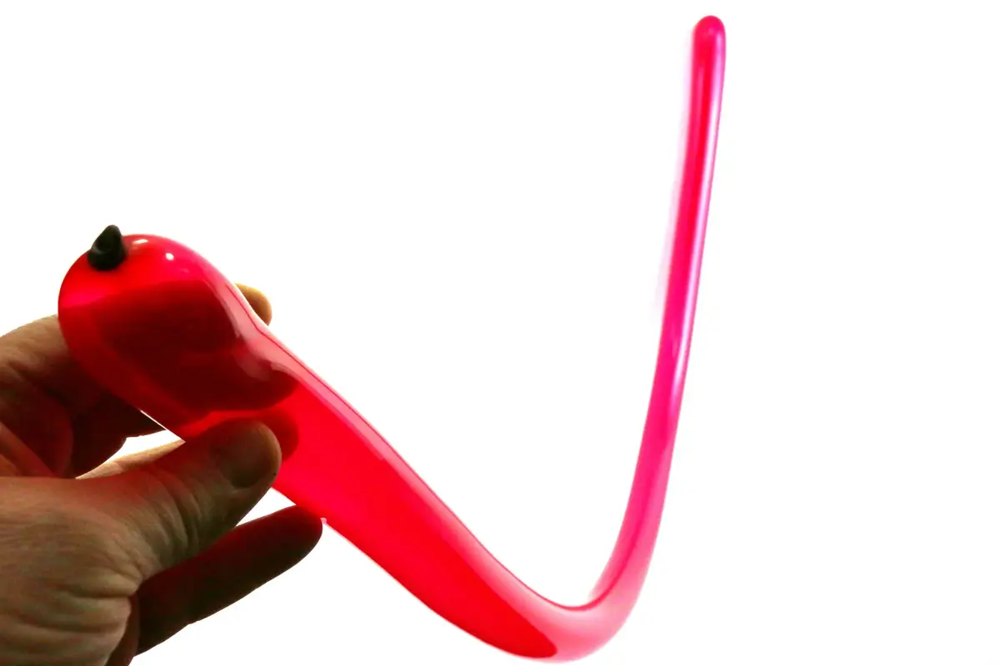
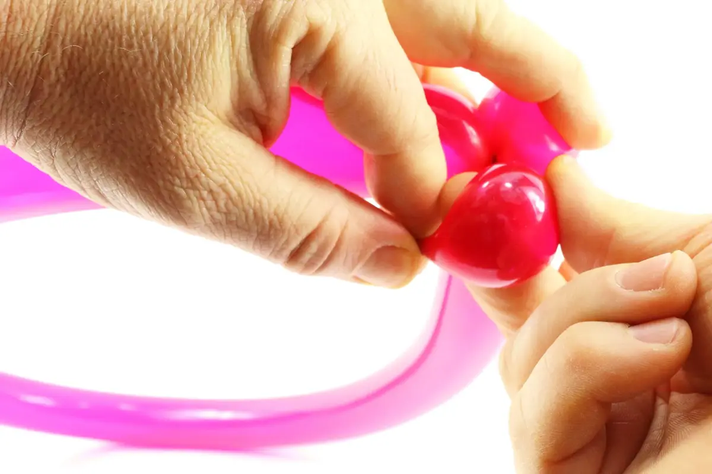
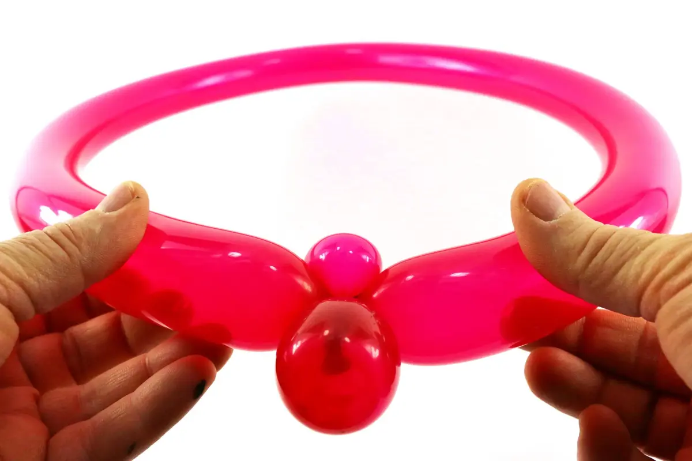
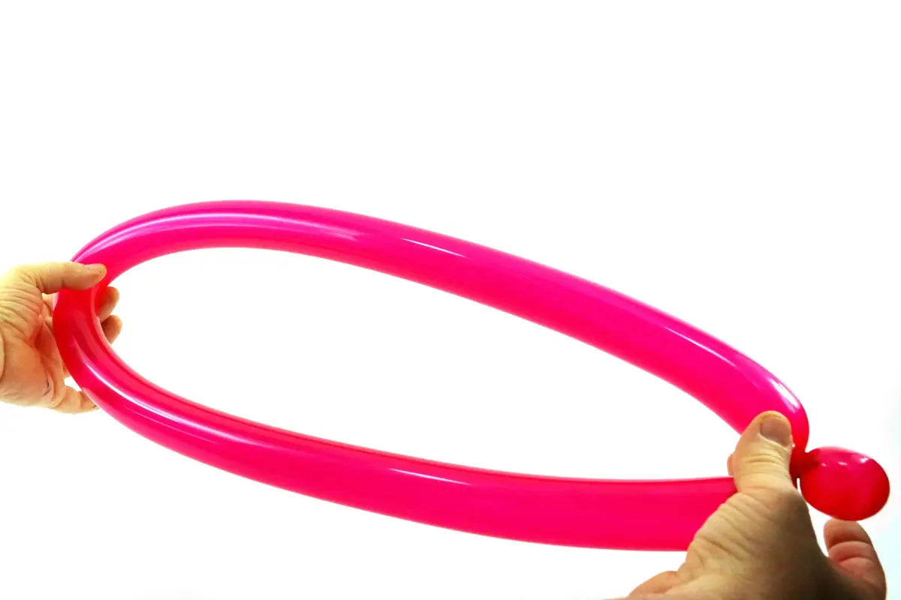
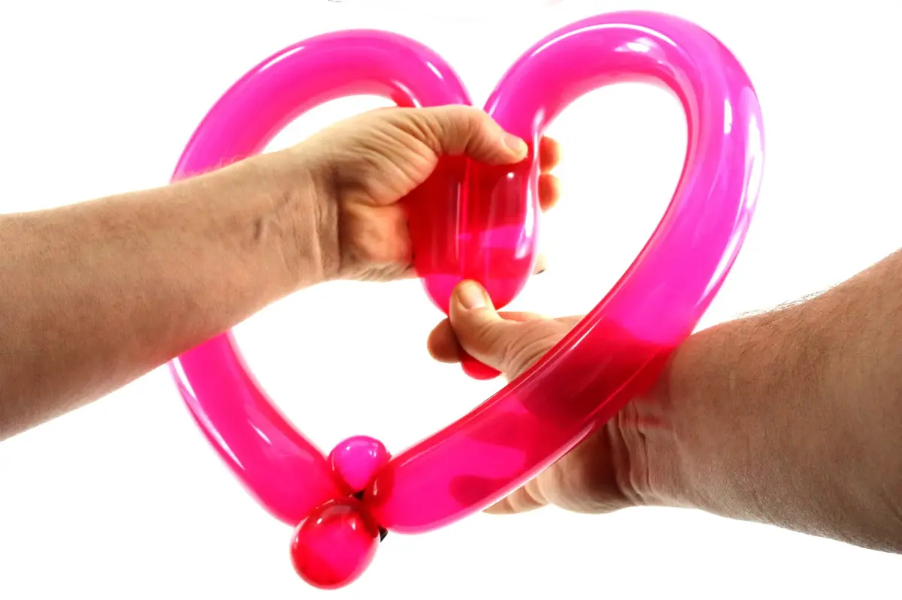

1- Inflate a balloon all the way, let a little air out before tying the knot so that the balloon is supple and easy to work with, and make sure air pressure is constant all along the balloon.2- Start by making a bubble, nice and round3- Bring the tip of the balloon against the crease located under the bubble.4- Wedge the tip of the balloon inside this crease, so as to create a new bubble at the end of the balloon.5- Block these two bubbles together. The second bubble will have to be a little longer than the first one.

6- Turn the first bubble (the one with the knot) into a pinch-twist.

7- Then, wedge the pinch-twist into the crease formed where the loop and the last bubble intersect, as shown above.

8- Find the middle of the loop, located across from the bubble and pinch-twist9- Take the loop in your hands, folding the middle of the loop inward, as shown above.10- Bring the two upper sides of the loop against each other and hold them together with your support hand. The middle of the loop is now bent downwards

11- Turn this bend into an acute angle with your twisting hand.12- While holding the tip of the acute angle with your support hand, use your twisting hand to accentuate the curve on the upper right (or left, whichever) side of the love heart.13- Still keeping the tip of the angle in place, swap hands and do it again; this time, exceptionnally, it's the support hand that you'll use to accentuate the curve on the other upper side of the heart, while the twisting hand will be holding the central angle of the love heart in place.14- Lastly, slowly ease back on the angle which should stay in place on its own. Which should give you this beautiful love heart! See you soon! For another lesson... with Môssieur Ballon!